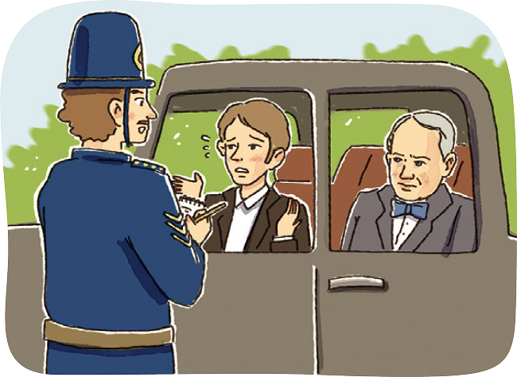

자료 읽기법은 신분이 귀한 자에게 아첨하지 않는다

제2차 세계 대전을 승리로 이끌어 국민의 영웅이 된 영국의 처칠 수상이 국회에 가는 도중 시간에 쫓기던 운전사가 급히 차를 몰다 교통경찰에게 적발당하였다. 운전사는 뒷좌석에 앉아 있는 처칠 수상을 눈짓으로 가리키며 “처칠 수상께서 타셨소.”라고 말하였다. 그러나 교통경찰은 아랑곳하지 않고 “과속은 과속이오, 벌금 을 부과하겠습니다.”라고 말하였다. 이에 처칠 수상은 언짢아하며 교통경찰에게 말하였다. “이봐, 내가 누군지 알아?” 그러자 교통경찰은 “예! 얼굴은 우리 수상 각하와 비슷합니다. 그런데 법을 지키는 데 있어서는 비슷하지 않습니다.”라며 벌금 을 부과하였다. 처칠 수상은 자기 직분을 충실히 수행하는 교통경찰의 철저한 근무 자세에 깊은 감명을 받아 경시 총감을 불 러 그 경찰관을 특진시킬 것을 명하였다. 그러나 경시 총감은 “과속 차량을 적발하였다고 특진시키는 규정은 없습니다.”라며 거절하였다
- 『중부매일』, 2023. 4. 11.
● 자신이 교통경찰이라면, 시장이나 대통령의 과속에 어떻게 대처할지를 생각해 보고 그렇게 대처하기로 한 까닭을 이야 기해 보자.
내가 교통경찰이라면, 시장이나 대통령의 과속에 원칙적으로 벌금을 부과할 것이다. 왜냐하면 교통경찰로서 해야 할 일은 법에 따라 과속한 운전자에게 벌금을 부과하는 것이기 때문이다.